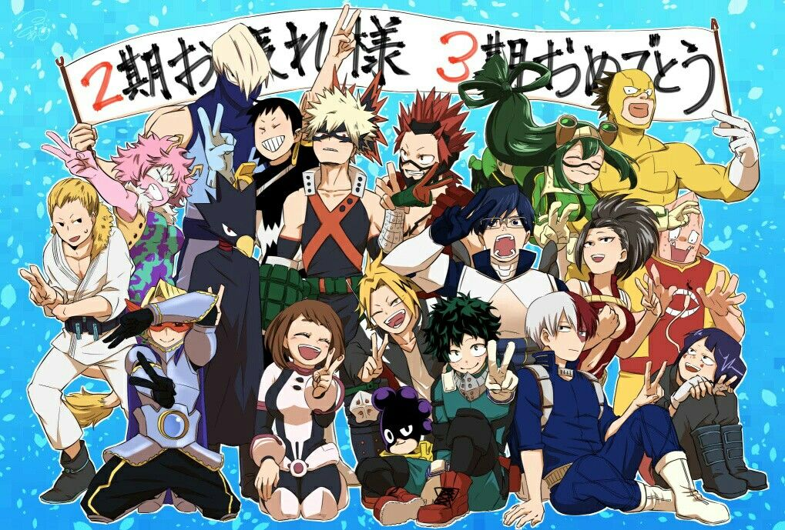

About Izuku Midoriya
Izuku, people call him Deku, is brave! He's an anime good character who fights villians to protect peace and become a worthy hero.
Class 1-A
Deku's Characteristics
- He has super strength
- He has proved to be an ultimate underdog
- Beloved by many, especially his hero All Might
- Shy on the outside, brave in the inside
Deku's Friends
Deku's classmates also have superpowers. His most special but complex friend is his rival Bakugo. He's very prideful. Click on the links below to read more about them: